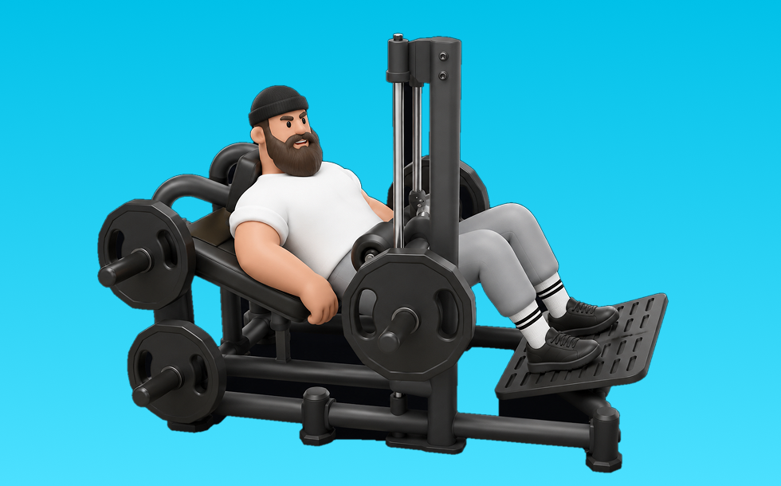

ヒップスラストエリート

ヒップスラストエリートとは、マシンを使って「股関節を伸ばす」動作を行い、主にお尻（臀筋）と太もも裏（ハムストリング）を鍛える筋力トレーニングです。軌道が安定し、上での収縮を作りやすいのが特徴で、骨盤を持ち上げて臀部を締め、ゆっくり戻す動作を繰り返します。これにより、臀部の筋力・筋量アップと股関節伸展力の向上が期待できます。
- 対象部位
- 脚
- 器具
- マシン
- 記録形式
- 重量・回数
- 別名
- ヒップスラストマシンエリート / hip thrust elite / elite hip thrust
YouTube動画
-
How To Build Great Glutes with Perfect Hip Thrust Technique (Fix Mistakes!)
-
お尻を鍛える筋トレ「ヒップリフト」の正しいやり方。体幹＆基礎代謝アップ【リングフィット攻略】
-
お尻＆背中に効く！脂肪燃焼＆ヒップアップ効果大「バックキック」の正しいやり方
-
【エニタイムフィットネス】ジムのマシンで出来るヒップアップ種目4選【筋トレ】
-
Top Hip Thrust Variations You’ve Not Seen | Gareth Sapstead
YouTubeショート
-
【筋トレ】ヒップスラストのやり方~If you are doing this,please fix it now.~ #筋トレ#パーソナルトレーナー ＃尻トレ＃ヒップスラスト＃HipThrust
-
脚が太くなるヒップスラスト、今すぐ辞めて！
-
ヒップスラストはコレ使うと便利 #筋トレ女子
-
スミスマシンヒップスラスト（Smith Machine Hip Thrust）のやり方とフォーム
-
【ジムあるある】使い方がわからないマシンTOP3#ジムあるある#あるある動画#あるあるネタ#フィットネス女子
-
This Glute Builder Machine makes hips thrusts SO EASY #hipthrustmachine #glutebuilder #hipthrust
-
Booty Builder ® Hip Thrust Correct vs Incorrect Form
-
Hip Thrust Tutorial - Proper Form and Technique
-
This Hip Thrust Trick Builds Upper and Lower Glutes 🍑
-
【最強尻トレ🍑】桃尻になりたい方必見❗️ヒップスラストはこうした方が良い！？#桃尻#ヒップスラスト#尻トレ
-
How To: Hip Thrust Machine
-
正しいルーマニアンデッドリフト4つのポイント #筋トレ
-
GLUTEBUILDER HIP THRUST ELITE OVERVIEW
-
Smith Machine Hip Thrust
-
Deadlift form check! 🏋️♀️ #shorts
-
みんなはトレ中なに履いてる？#shorts #アルプロン #筋トレあるある #ジムあるある
-
How To Hip Thrust #hipthrusts #workouttutorial #workouttips
-
【女子トレーニーあるある】ジムにスタイルの良い女性が来た時 #shorts
-
Treadmill Running Form #runningtips
-
How to set up the Bellabooty Hip Thrust Belt #gluteworkout #dumbbellworkout #glutes #homeworkout
-
How to Hip Thrust! Planet Fitness Smith Machine Tutorial including set up! #tutorial #gym #hipthrust
-
✅ The Perfect Leg Extension
-
【比較】ルーマニアンデッドリフトVSデッドリフト #セミパーソナルジム #トレーニング #くびれ
-
Elite Powerlifter Anatoly learns how to hip thrust in the most hilarious gym prank you will ever see
-
Dumbbell Hip Thrust
-
Fix your hamstring curls! 🤔 #workouttips #legexercise #hamstringcurls #gym
-
正しいデッドリフト4つのポイント#筋トレ #デッドリフト
-
How to run - proper foot strike techniques
-
デッドリフトは地球の種目#shorts #横川尚隆 #筋トレ
-
Sprint mechanics explained in 23 seconds
-
The PERFECT Leg Extension
-
Matrix Glute Trainer/Hip Thrust Machine
-
How To Perform Hip Thrusts | An Advanced Glute Bridge Progression
-
The BEST Glute Bridge & Hip Thrust for Healthy Hips! 90 Degree Eccentric Isometrics Med Ball Squeeze
-
How to Seated Hamstring curl
-
【ガチトレ】横川尚隆のディップス #横川尚隆 #筋トレ #筋肉事典
-
NO HIP THRUST MACHINE = NO PROBLEM!
-
How To Deadlift With Perfect Technique (Step By Step)
-
パワーラックで助かった、、、【Shorts】
-
Concept2 Rowing Techniques for HYROX & CrossFit Row Training
動作方法
- 背中を中立に保ち、股関節から動き始める
- もも裏の張りを感じる位置まで下ろす
- 足裏で床を押して立ち上がる
動作ポイント
- 背中を丸めない
- 膝を伸ばしきらない
- バーや重りを体から離しすぎない
ワンポイントアドバイス
- ウォームアップで股関節と足首を動かす
- 高重量の日はセーフティ設定を確認する
目的別回数設定
目的や体力に応じた一般的な目安です。無理のない範囲で調整してください。
- 筋力アップ
- 1〜5回
- 筋肥大
- 6〜12回
- 持久力アップ
- 13〜20回
YouTube動画について
動画はYouTubeの公開情報をもとに表示しています。内容は投稿者によるもので、Biggrによる監修ではありません。
アプリを入手
筋トレやトレーニングの記録はBiggrにお任せください。今すぐ無料で使い始められます。